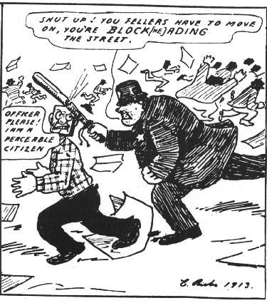

The IWW and Electoral Politics: An Historical Overview
By John Sillito - Industrial Worker (November 1991)
Election Day he shouted, "a Socialist For Mayor!"
The "comrade" got elected, he happy was for fair,
But after the election he got an awful shock,
A great big socialistic bull did rap him on the block.
And Comrade Block did sob, "I helped him get his job. "
When Joe Hill wrote this verse to his famous "Mr. Block" somewhere around 1910, he was expressing a common view held by most members of the IWW that electoral political action, even in support of leftist candidates, was a futile exercise. As it turned out Hill's words proved to be prophetic since the "bull" that arrested him, the physician who treated his wounds and later notified the police of his whereabouts, and the lawyer who misrepresented him were all Socialists. On the other hand, much of Hill's support in Utah came from the Socialist Party or its supporters.
In any event the anti-electoral politics stance of the IWW is long-standing. Its roots go back to the very beginning when a wide coalition of individuals including socialists like Eugene V. Debs, Daniel De Leon and others, formed the IWW in 1905. Between then and 1908 when the union was reorganized, tensions between the various groups in the IWW were manifest in disagreement over tactics. Some urged the new union to establish a political component which would capture power at the ballot box. Others believed in direct action and taking power "at the point of production." Those advocating the latter position pointed out that large numbers of workers, particularly blacks, women, and immigrant workers were legally disenfranchised, thus weakening the chance of the strategy's success. Moreover, since large segments of IWW support came from migratory workers who moved frequently, it would be difficult to endorse a strategy which involved permanent electoral polling booths and voters residences.
The choice, these Wobblies argued, was to emphasize areas of strength, not weakness. At the union's 1908 convention -- where as Fred Thompson noted there was a "hearty disrespect for politicians" -- the advocates of direct action dominated, though some sympathy for electoral politics and even cordial fraternal relations with some groups like the Socialist Party continued at different times and in different places. Indeed, some historians have argued that the union was not so much anti-political as it was non-political in an electoral sense. At the same time, the actions of the 1908 convention unified the IWW and moved it in a more coherent and cohesive direction. As Fred Thompson has observed:
In one sense this [convention] is the launching of the IWW. It is from here on that it exists as an organization with its own distinctive character ... The five thousand members it had after the 1908 convention were no longer divergent groups trying to live together but a compact organization of [workers] attached to the IWW rather than to something else, largely rebels who had been organized by the new union, but who had long experience in the struggle with the employer ...
In understanding the IWW's position on electoral politics it is also important to examine the career of a founding member of the union, and its best known advocate in the years before World War I-William D. "Big Bill" Haywood. A son of the West, Haywood's roots went back to the Western Federation of Miners, of which he was an officer. Because his experiences lay in industrial unionism, not electoral politics, Haywood never really championed the educational possibilities of electoral politics like his colleagues in the Socialist Party. Though he urged workers to vote and even ran for Governor of Colorado himself, Haywood believed that the importance of electoral politics existed only in so far as election to office could translate into the ability to protect working people. In this sense, Haywood saw politics as a secondary, though important, part of the overall attempt to seize political control through direct action. Haywood's views on socialism and . politics are succinctly expressed in a famous talk he gave in New York entitled "Socialism: The Hope of the Working Class:"
With the success of socialism practically all of the political offices now in existence will be put out of business. I want to say also, and with as much emphasis, that while a member of the Socialist Party and believing firmly n political action, it is decidedly better in my opinion to elect the superintendent in some branch of industry than to elect a congressman ... Under socialism we will have no congresses such as exist today, no legislatures, nor parliaments nor councils of municipalities. Our councils will not be filled with aspiring lawyers or ministers, but they will be conventions of the working class, composed of men and women who will go there for purposes of education, to exchange ideas, and by their expert knowledge to improve the machinery so that we can use it for the advantage of the working class.
For a time, Haywood was an active , member of the Socialist Party of America, serving on its national committee. Ultimately, he was removed from that office in 1913 by a party recall, ostensibly because he had publicly advocated violence and sabotage. At the same time, Haywood had alienated segments of the Socialist Party because he promoted dual unionism, rejected the notion of gradual reform' as meaningful to his working-class' constituency, and clashed with important figures on the right and center of the umbrella Socialist Party. After Haywood's dismissal, the influence of the IWW and others in the Socialist party who shared a syndicalist view was greatly diminished.
Also important in understanding the IWW's avoidance of electoral politics is a recognition that the union has always emphasized direct action, the general strike and workers control of the workplace. In this sense, the IWW view represented in part the influence of the anarcho-syndicalist ideas of later 19th century Europe and similar trends introduced into the United States. But the IWW represented an indigenous form of industrial unionism that sought to create "one big union" through which the working class would take possesson "of the earth and the machinery of production and abolish the wage system." In this way society would be transformed by workers control of industry. As the preamble to the IWW puts it "it is the historic mission of the working class to do away with capitalism" through organizing the working class into an "army of production not only for the everyday struggle with capitalists, but also to carry on production when capitalism shall have been overthrown."
In the 1920s and 30s, the union came into conflict with the Communist Party which emerged as a proponent of an electoral approach to bringing about a workers' government. While the Communists accepted the importance of industrial unionism, they also believed in the Leninist concept of a revolutionary "vanguard party." The IWW, committed as it was to democracy preceding from the bottom up, was out of step with the Communist notion of democratic centralism. Over the years, the IWW has continued to oppose support for electoral political action and distanced itself from political solutions as a whole, continuing to stress action at the point of production.
Today, these attitudes towards electoral politics continue to be very evident in the organizational work of the union, and among the members at large. At the same time, it should be noted that this has not kept Wobblies from working with others whose first priority, tactically speaking, may be somewhat different. A poll taken among Socialist Party members a decade or so ago, for example, demonstrated that there were a number of party members who had dual membership in the IWW, or subscribed to the Industrial Worker. At the same time, it should be noted that at the present, the Socialist Party national office in New York City is an IWW job ' shop. And indeed, there were several in attendance at the recent Socialist Party national convention in Chicago in September.
Like Fred Thompson, I think it is healthy to have a "hearty disrespect" for politicians. Perhaps the message in all of this is that there are many ways, and many strategies, to achieve common goals. November is the season of elections, and we will all be besieged with the promises and pleadings of politicians. But November is also a time when we remember Joe Hill. As he said:
"Don't Mourn, Organize!"